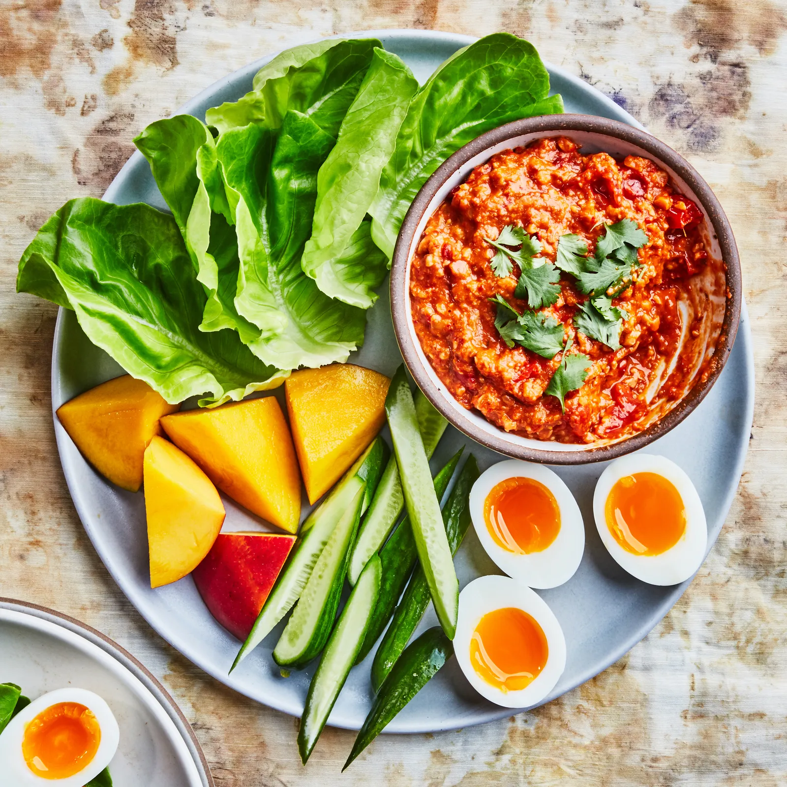

Cashew Nam Prik

Description
This vibrant and flavorful Cashew Nam Prik is a delightful Thai chili dip that perfectly balances heat, sweetness, and nutty richness. Made with roasted cashews, dried chilies, garlic, shallots, fish sauce, lime juice, and palm sugar, it offers a complex and addictive taste. It's fantastic served with fresh vegetables like cucumbers and carrots, crispy pork rinds, or alongside grilled meats and seafood.
The texture is wonderfully varied, with the crunch of the cashews contrasting beautifully with the smooth, tangy sauce. This nam prik is relatively quick to prepare and can be adjusted to your preferred level of spiciness, making it a versatile and exciting addition to any meal or snack.
Ingredients
- 1/2 cup roasted unsalted cashews
- 10-15 dried red chilies, stemmed and seeded (adjust to your spice preference)
- 4 cloves garlic, roughly chopped
- 2 shallots, roughly chopped
- 2 tablespoons fish sauce
- 2 tablespoons lime juice
- 1 tablespoon palm sugar, finely chopped
- 2 tablespoons vegetable oil
Steps
- Soak the dried chilies in warm water for about 15-20 minutes until softened. Drain well.
- In a dry pan over medium heat, toast the cashews until lightly golden and fragrant. Remove from the pan and set aside.
- Heat the vegetable oil in a small skillet over medium heat. Add the garlic and shallots and cook until fragrant and lightly golden, about 2-3 minutes. Be careful not to burn them.
- In a food processor or mortar and pestle, combine the soaked chilies, toasted cashews, and sautéed garlic and shallots. Process or pound until a coarse paste forms.
- Transfer the paste to a bowl. Stir in the fish sauce, lime juice, and palm sugar. Mix well until the sugar is dissolved and all the ingredients are thoroughly combined.
- Taste and adjust seasoning as needed, adding more lime juice for acidity, fish sauce for saltiness, or palm sugar for sweetness. You can also add more chili for heat if desired.
- Serve immediately or store in an airtight container in the refrigerator for up to a week.
Home